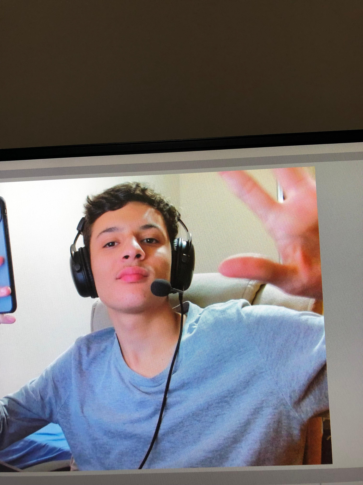

Gabriel Sbrana
Olá, sou o Gabriel. Tenho 18 anos, sou estudante de Análise e Desenvolvimento de Sistemas na FIAP, estou desenvolvendo uma solução para resgate de animais em desastres naturais, da turma 1TDSPH.
Moisés Waidemann

Olá, sou o Moisés. Tenho 18 anos, sou estudante de Análise e Desenvolvimento de Sistemas na FIAP, estou desenvolvendo uma solução para resgate de animais em desastres naturais, da turma 1TDSPH.
Thiago Mota
Olá, sou o Thiago. Tenho 20 anos, sou estudante de Análise e Desenvolvimento de Sistemas na FIAP, estou desenvolvendo uma solução para resgate de animais em desastres naturais, da turma 1TDSPH.